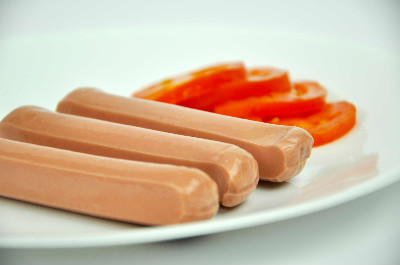

Servicios
SensoLab Solutions pone al alcance diferentes herramientas para el éxito comercial de tus productos. Te ayudamos a conseguirlo resolviendo retos y diferentes estrategias de acuerdo a tus necesidades, tiempo y recursos.
A continuación se presentan algunos de nuestros servicios.

Estudios con Panel Entrenado

Estudios con Consumidores

Servicios Adicionales
Descarga nuestra cartelera de servicios cloud_downloadFlyer